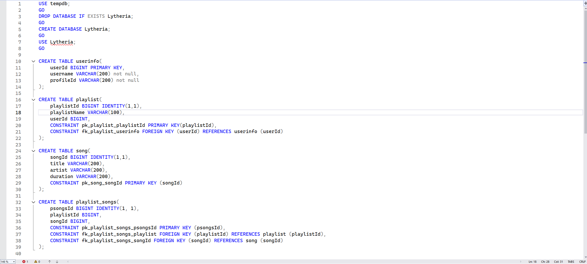
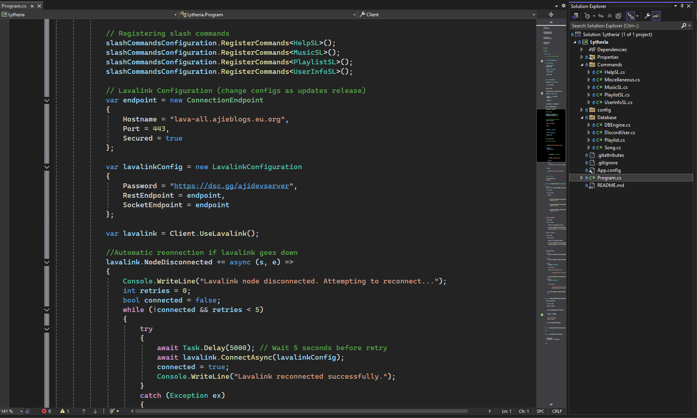
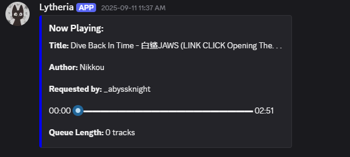
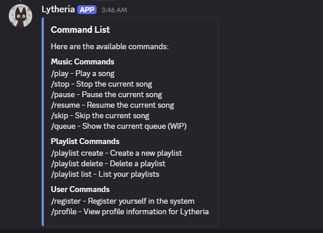

Lytheria - Discord Bot




Summary
Lytheria is a personal Discord bot created as a summer side project for use between myself and a close group of friends. It is written in C# and built using plugins such as DSharp and Lavalink to provide a fully functional and responsive music system. Lytheria offers quality-of-life features, customizable playlists, and persistent user data.
Purpose
- Implementing Discord bot architecture using C#
- Integrating music playback via Lavalink
- Event handling for commands and user interactions
- Using an SQL database to store user data, songs, playlists, and bot settings
- Allowing users to curate and save playlists for later sessions
- Error handling and logging for improved bot stability